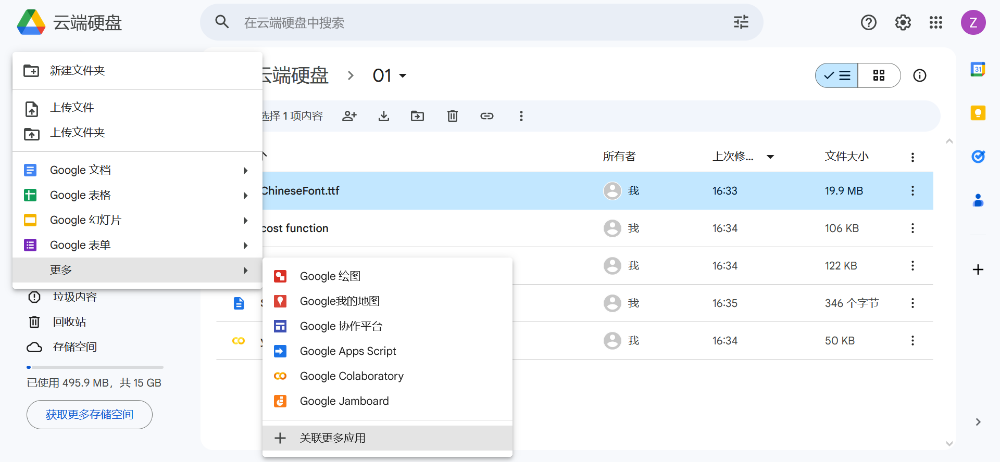
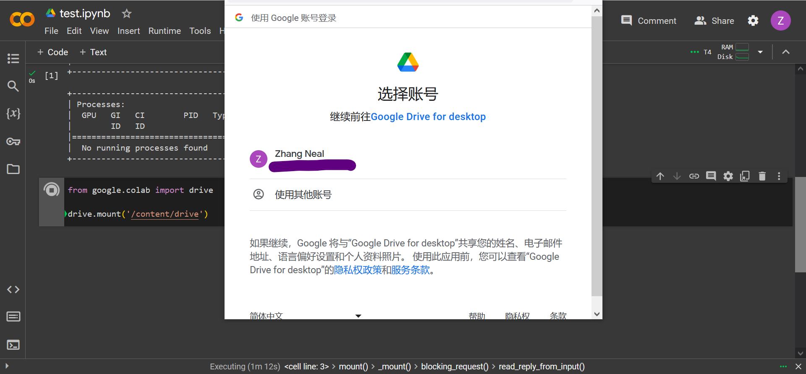
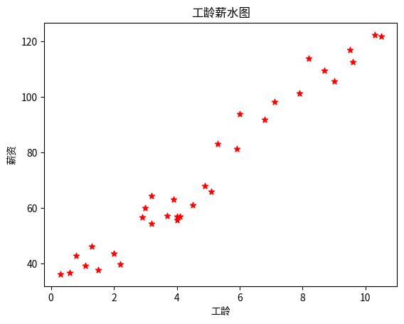

配置Colab开发环境
一、环境配置
这里使用Google家的colab，免费又好用。
- 登录Gooelg drive
创建colab环境
- 新建-->更多-->关联更多应用:然后应用市场搜索搜索colab
- 如果之前已经使用过colab,则更多中会出现google colaboratory 
链接
- 进入环境后,点击右上角connect,链接资源环境,开始启用colab
- 开通GPU
- Edit-->notebook settins-->Hardware accelerator:选择T4 GPU,输入
!nvidia-smi然后运行,会显示以下GPU信息
- Edit-->notebook settins-->Hardware accelerator:选择T4 GPU,输入
Wed Jan 10 08:31:14 2024
+---------------------------------------------------------------------------------------+
| NVIDIA-SMI 535.104.05 Driver Version: 535.104.05 CUDA Version: 12.2 |
|-----------------------------------------+----------------------+----------------------+
| GPU Name Persistence-M | Bus-Id Disp.A | Volatile Uncorr. ECC |
| Fan Temp Perf Pwr:Usage/Cap | Memory-Usage | GPU-Util Compute M. |
| | | MIG M. |
|=========================================+======================+======================|
| 0 Tesla T4 Off | 00000000:00:04.0 Off | 0 |
| N/A 51C P8 9W / 70W | 0MiB / 15360MiB | 0% Default |
| | | N/A |
+-----------------------------------------+----------------------+----------------------+
+---------------------------------------------------------------------------------------+
| Processes: |
| GPU GI CI PID Type Process name GPU Memory |
| ID ID Usage |
|=======================================================================================|
| No running processes found |
+---------------------------------------------------------------------------------------+
二、使用Drive资源
- 挂载drive
运行下列代码时,会提示要求授权
from google.colab import drive
drive.mount('/content/drive')

- 挂载成功后会返回
Drive already mounted at /content/drive; to attempt to forcibly remount, call drive.mount("/content/drive", force_remount=True). 挂载后drive的根路径为:
/content/drive/My Drive,我的文件是在drive的子目录下,所以完整路径为:/content/drive/My Drive/01/Salary_Data.csv使用drive资源
import pandas as pd url='/content/drive/My Drive/01/Salary_Data.csv' print(pd.read_csv(url))使用pandas读取csv表格后会返回表格内容
YearsExperience Salary 0 0.3 36.2 1 0.6 36.6 2 0.8 42.8 3 1.1 39.3 4 1.3 46.2 5 1.5 37.7 6 2.0 43.5 7 2.2 39.8 8 2.9 56.6 9 3.0 60.1 10 3.2 54.4 11 3.2 64.4 12 3.7 57.1 13 3.9 63.2 14 4.0 55.7 15 4.0 56.9 16 4.1 57.0 17 4.5 61.1 18 4.9 67.9 19 5.1 66.0 20 5.3 83.0 21 5.9 81.3 22 6.0 93.9 23 6.8 91.7 24 7.1 98.2 25 7.9 101.3 26 8.2 113.8 27 8.7 109.4 28 9.0 105.5 29 9.5 116.9 30 9.6 112.6 31 10.3 122.3 32 10.5 121.8
三、安装中文字体
默认情况下，colab无法显示中文，需要自行安装字体
如果没有中文字体,在matplotlib中使用汉字,会报错.
/usr/local/lib/python3.10/dist-packages/IPython/core/pylabtools.py:151: UserWarning: Glyph 24180 (\N{CJK UNIFIED IDEOGRAPH-5E74}) missing from current font.
fig.canvas.print_figure(bytes_io, **kw)
/usr/local/lib/python3.10/dist-packages/IPython/core/pylabtools.py:151: UserWarning: Glyph 36164 (\N{CJK UNIFIED IDEOGRAPH-8D44}) missing from current font.
fig.canvas.print_figure(bytes_io, **kw)
/usr/local/lib/python3.10/dist-packages/IPython/core/pylabtools.py:151: UserWarning: Glyph 25955 (\N{CJK UNIFIED IDEOGRAPH-6563}) missing from current font.
fig.canvas.print_figure(bytes_io, **kw)
/usr/local/lib/python3.10/dist-packages/IPython/core/pylabtools.py:151: UserWarning: Glyph 28857 (\N{CJK UNIFIED IDEOGRAPH-70B9}) missing from current font.
fig.canvas.print_figure(bytes_io, **kw)
/usr/local/lib/python3.10/dist-packages/IPython/core/pylabtools.py:151: UserWarning: Glyph 22270 (\N{CJK UNIFIED IDEOGRAPH-56FE}) missing from current font.
fig.canvas.print_figure(bytes_io, **kw)
- 安装字体
安装字体前需要安装wget,使用wget下载字体
这里下载的字体是ChineseFont.ttf
!pip install wget
import wget
wget.download("https://drive.usercontent.google.com/download?id=10SXzZFfsoMTC9b7UZLnfse7tIprMI8Bh&export=download&authuser=0&confirm=t&uuid=ccf99670-d41f-4cb9-aaa6-1516a85097ea&at=APZUnTU8zDUUTF7m46xF5zVcYb04:1704939398929")
字体安装成功后,会有一个输出提示
Requirement already satisfied: wget in /usr/local/lib/python3.10/dist-packages (3.2) ChineseFont.ttf使用字体
import matplotlib.pyplot as plt import pandas as pd import matplotlib as mlp from matplotlib.font_manager import fontManager fontManager.addfont("ChineseFont.ttf") mlp.rc("font",family="ChineseFont") url='/content/drive/My Drive/01/Salary_Data.csv' dataframe=pd.read_csv(url) x=dataframe['YearsExperience'] y=dataframe['Salary'] plt.title("工龄薪水图") plt.xlabel("工龄") plt.ylabel("薪资") plt.scatter(x,y,marker="*",color="red",label="真实数据") plt.show()